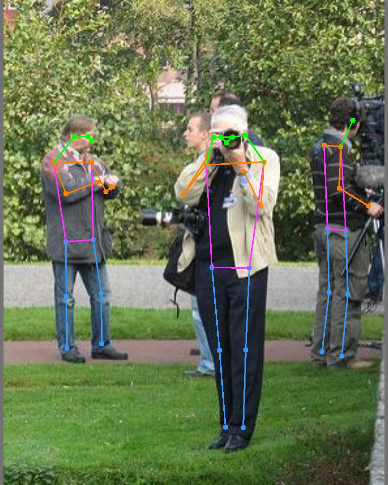

| Experiment | Steps |
|---|---|
| Experiment 0 Get value of theta |
What is the multiplication scalar to get to world scale? 1. get the feet location (x,y) 2. get the depth at that location (px) 3. get the height of the person at that location (px) 4. theta = avg_human_height/depth_at_feet -- avg_human_height = 1.75 meters |
| Experiment 1 Baseline for depth estimation |
How do the predicted model do? 1. Calculate Depthmap with MiDas 2. Calculate the loss between the GT and Predicted Depthmap 3. Optimize the GT and Predicted Depthmap with theta 4. Calculate the loss between the optimized GT and Predicted Depthmap |
| Experiment 2 Estimating size of other objects(humans) |
Given theta can we estimate size of other objects? 1. Get the other humans feet location 2. Calculate their height in meters by multiplying with theta |
| Input | |
|---|---|
| Skeleton |  |
| Feet location | |
|
Depthmap at the feet_location = 166px Height in px = 563.98 theta: avg_human_height/depth_at_feet --> (1.75/166)*1000 ===>10.542 |
| Loss MSE = 113.37 |
GT |
Pred |
|---|---|---|
|
Optimized with theta, Loss MSE = 2161804.96 ? |
Optimized GT |
Optimized Pred |
| Person at the left end |
with GT Depth Map height =2.013m |
|---|